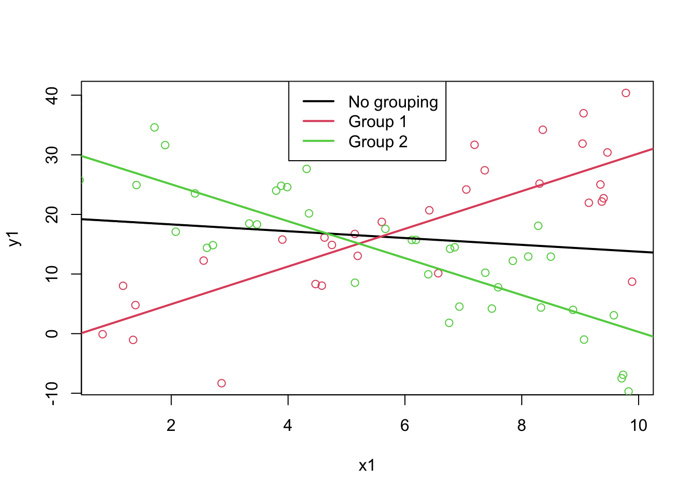

4 Regression
4.1 Introduction
These notes are based on Chapter 4 of Baldi & Moore and Chapter 6.1 to 6.3 in OpenIntro Biostats.
In linear modelling, we have a collection of pairs \(x_i\) and \(y_i\). We think that there’s some sort of relationship between \(x\) and \(y\), and we think that a line is an adequate way to characterize that relationship1.
Just like we assume that there’s a “true” population mean, there is also a “true” slope and intercept for the line that characterizes the relationship between \(x\) and \(y\). In the plot below, the green line represents the “true” relationship between \(x\) and \(y\), and the data are random values above and below that line2.
In high school, you may have learned a line as \(y = mx + b\). In statistics, we often use latin letters for estimates and greek letters for population parameters3. The population line is thus:
\[ y_i = \alpha + \beta x_i + \epsilon_i \]
- \(\alpha\) is the intercept.
- \(\beta\) is the slope.
- A 1 unit increase in \(x\) corresponds to a \(\beta\) increase in \(y\).
- \(\epsilon_i\) is random noise (\(N(0,\sigma)\)).
- Again, we think of \(x\) as being fixed. The random noise is above and below the line, not side to side.
- The formula implies that \(y_i \sim N(\alpha + \beta x_i, \sigma)\), since \(y_i\) is centered at \(\alpha + \beta x_i\) but randomly varies above and below the line with variance \(\sigma^2\).
The word “regression” means to go backward. I like to think that we are “going backward” to the population numbers from the sample values4. Any situation where you are estimating a population parameter is technically a regression, but this terminology is not useful for this class.
To regress, we estimate the parameters using sample statistics. For linear regression, we use regular old latin letters instead of the fancy greek ones. \(a\) is the estimate for \(\alpha\), \(b\) for \(\beta\), and \(e\) for \(\epsilon\). In order to do find these sample statistics, we minimize the squared error between the line and the data:
\[e_i^2 = (y_i - a - b x_i)^2\]
In other words, we find \(a\) (for \(\alpha\)) and \(b\) (for \(\beta\)) that make the sum of the squared errors \(e_i\) as small as possible. We use the squared errors for the same reason we use squared deviations in the forumla for the variance: so that positive and negative values do not cancel out5.
The estimates \(a\) and \(b\) are as follows:
\[\begin{align*} b &= rs_y/s_x\\ a &= \bar y - b\bar x \end{align*}\]
These are called the least squares estimates6. The equation for \(b\) is especially important!
In R, these can be calculated as follows. The mtcars data set is a collection of measurements made on various cars. In this example, we’ll regress the fuel efficiency (in miles per gallon, or mpg) against the weight of the car.
## Load a built-in data set
data(mtcars)
## Define which variables are x and y.
## This isn't necessary, but helps with teaching
x <- mtcars$wt
y <- mtcars$mpg
## Calculate the estimates by hand
b <- cor(x, y) * sd(y) / sd(x)
a <- mean(y) - b * mean(x)
## Print the estimates
c(a, b)[1] 37.285126 -5.344472## Use the built-in functions
summary(lm(y ~ x))
Call:
lm(formula = y ~ x)
Residuals:
Min 1Q Median 3Q Max
-4.5432 -2.3647 -0.1252 1.4096 6.8727
Coefficients:
Estimate Std. Error t value Pr(>|t|)
(Intercept) 37.2851 1.8776 19.858 < 2e-16 ***
x -5.3445 0.5591 -9.559 1.29e-10 ***
---
Signif. codes: 0 '***' 0.001 '**' 0.01 '*' 0.05 '.' 0.1 ' ' 1
Residual standard error: 3.046 on 30 degrees of freedom
Multiple R-squared: 0.7528, Adjusted R-squared: 0.7446
F-statistic: 91.38 on 1 and 30 DF, p-value: 1.294e-10From this line, we can make predictions about new points by simply plugging in the \(x\) value. For example, let’s say we wanted to guess the mpg of a car that weighs 3,000 lbs. In the data, the units for weight are 1000 lbs, so this means plugging a value of wt=3 into the data.
a + b*3[1] 21.25171So we would guess that a 3 ton car would have a fuel efficiency of 21.25 miles per gallon. Let’s look at this on a plot:
plot(y ~ x)
points(3, a + b*3, col = "red", pch = 16)
It looks like this is somewhere around where we would expect.
If we repeat this for every possible \(x\) value, we get the regression line below:
plot(y ~ x)
points(3, a + b*3, col = "red", pch = 16)
## abline adds a line with slope b and intercept a to a plot.
abline(a = a, b = b, col = "red")We cal also see the values of \(e\), the residuals.
e <- y - (a + b*x)
plot(e ~ x, main = "Plot of the Residuals")
## abline can also draw a line with slope 0 (horizontal)
abline(h = 0, col = "grey")4.2 Regression Facts
Here are some facts about the least squares regression line:
- The point \((\bar x, \bar y)\) is always on the line.
- Least squares regression can be seen as putting a line through \((\bar x, \bar y)\) and rotating it until the squared error is the smallest.
- \(s_y\ge 0\) and \(s_x\ge 0\), so whenever \(r > 0\), we know that \(b > 0\).
- The slope has the same sign as the correlation. Otherwise, the slope could be pretty much any number, regardless of the correlation.
- If \(r = 0\), then \(b = 0\), and vice versa.
- Other than the sign and the special case of \(r=0\), there is no way to tell the value of \(r\) if all you know is \(b\).
- For \(r\), the distinction between \(y\) and \(x\) doesn’t matter.
- For the regression line, it absolutely matters!
- The sum of the errors is 0.
## The prediction at mean(x) is equal to mean(y)
## In other words, (mean(x), mean(y)) is a point on the line
a + b * mean(x)[1] 20.09062mean(y)[1] 20.09062## Correlation doesn't care about order
cor(x, y)[1] -0.8676594cor(y, x)[1] -0.8676594## Theoretically 0, but computers aren't perfectly precise
## Note: e-14 refers to 10^-14, or 14 zeroes before the first digit
# So, pretty close to 0.
sum(e) [1] 1.065814e-144.3 Percent of Variation Explained
Because of some mathematical quirks, \(r^2\), the squared value of \(r\), can be interpreted as:
The percent of variation in \(y\) that can be “explained” by the linear model.7
The value of \(r^2\) can be calculated as: \[ R^2 = r^2 = \frac{\text{Variance of the predicted }y\text{-values}}{\text{Variance of the observed }y\text{-values}} \]
I’ll explain this in steps. The first plot below shows just the values in \(y\). This collection of values has a own mean and variance.
The second plot shows the change in variance that the line “explains”. Instead of deviations above and below the mean, the variance can now be characterized as the deviations above and below the regression line. This variance will always be lower than the variance of \(y\) without incorporating \(x\)8.
The third plot shows where this variance went. The line itself has variance; there is deviation in the line above and below the mean of \(y\). This is the variance that gets explained by incorporating \(x\)! If you consider one of the points in \(y\), say \(y_1\), the distance between \(y_1\) and \(\bar y\) can be split up into the difference between \(\bar y\) and the regression line plus the distance between the regression line and \(y_1\).

The rest of the variance is left unexplianed. No regression will ever be perfect unless we are studing a very very simple .
To see this a different way, consider what happens when \(r = 0\)9. This will just be a horizontal line, and none of the variance is explained. On the other had, if \(r = 1\) then all of the points will be exactly on the line. All of the variance in \(y\) has been explained by the regression against \(x\) - there’s no variance left to be explained!10
Notice how the R output includes
4.4 Extensions and Cautions
Prediction
For a new \(x\) value, \[y = a + bx\] is the predicted value of \(y\). That is, if we have an \(x\) value, we can plug it into the equation and find out what value of \(y\) we would expect.
Note: There is still variance around this prediction! Our “expected” value will never be exactly equal to the truth - The value of \(y\) at a given value of \(x\) follows a normal distribution11, and the probability of a single point is 0!
Extrapolation
Extrapolation is what happens when prediction goes wrong. In particular, it’s what happens when we try to make a prediction at an \(x\) value where we don’t have any data. Usually this means we’re predicting an \(x\) value far above or far below the range of our data, but it can also happen if there’s a gap in the middle of our data.
In the plot below, the black dots are the original data, and we’re trying to predict a new value at \(x = 25\). The red line is the true model that I generated the data from. The black line represents a linear model. This model fits the original data quite well12, but predictions are completely inappropriate for values outside the data.
Lurking Variables
The black line in the plot below represents a regression where all of the data was lumped together. As we can see, this line does not seem to fit the data well. There is a hidden relationship in the the data - the green points and the red points should be considered separately13.

A more serious consequence of a lurking variable has shown up before in the Palmer penguins data. In that example, the lurking variable actually reversed the correlation - if we lumped the groups together we got a negative correlation (and therefore negative slope), but if we looked at the groups individually we got positive associations in all of the groups! This is called Simpson’s Paradox, and basically means that we have to be very careful about interpreting correlations!

Very few things are actually linear, but lines are fantastic approximations to many things.↩︎
We assume that \(x\) is fixed, but \(y\) has random noise. In other words, \(x\) is not a random variable but \(y\) is.↩︎
Because we think it makes us fancy. Note that the Baldi & Moore textbook uses \(a\), \(b\), and \(e\) for everything.↩︎
Actually, the word comes from “regressing to the mean”, which comes from how children are closer to average height than their parents - they go back toward the mean. This is not important.↩︎
Also, because the calculus works out so much better.↩︎
There are other ways to estimate these parameters, but they’re outside the scope of this course. All regression lines that you see in the textbook and the notes will be least squares regression lines.↩︎
Usually \(r^2\) is labelled \(R^2\) for historical reasons. Capitalization matters in math; it’s just coincidence that both lower case and upper case mean the same thing here.↩︎
Except when \(r=0\), can you explain why?↩︎
Therefore the slope will also be 0.↩︎
Statistics is still just the study of variance.↩︎
Our prediction is just us guessing the mean value of \(y\) at different values of \(x\).↩︎
Even though it’s not the true relationship, it’s a reasonable approximation.↩︎
Possibly as a blocking variable.↩︎